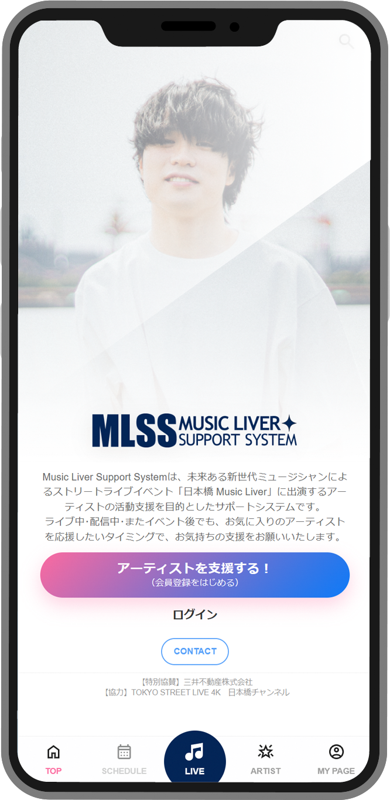

Music Liver Support Systemは、
ストリートライブで活動するアーティストとファンをつなぐプラットフォーム。
メッセージやギフトを通して、ライブの前後を問わず応援を届けられます。

ストリートライブで生まれる、偶然の出会い。足を止め、拍手を送った人々の中には「またライブを見たい」「この人をもっと応援したい」と感じた人もいるはず。
でも、その想いはライブ終了とともに、その場限りで消えてしまうことも…。
Music Liver Support Systemなら、ライブの熱量をそのまま「あなたへの継続的な応援」につなげられます。
Music Liver Support System とは
ファンはQRコードからアーティストページへ簡単アクセス。ライブ会場やSNSからスムーズに案内できます。
ライブ前は「バックステージ」から、ライブ中は「ライブ画面」から。ファンはメッセージやギフトで応援できます。
ライブ中のギフトは、ライブ画面に演出として表示されます。会場の一体感が高まり、アーティストにも応援が届きます。
あなたの音楽活動を加速させる、4つの大きなメリットを提供します。
ライブ中に届いたメッセージやギフトが演出に即反映され、その場の盛り上がりにつながります。
ライブ告知から当日の応援、その後のファンコミュニケーションまで、継続的な接点を作れます。
ファンの反応や応援が可視化され、活動のモチベーションや成長支援にも活用できます。
現金の受け渡しが難しい環境でも、メッセージやギフトを通じて応援を届けられます。
QRコードからアーティストページへアクセスし、その場でメッセージやギフトを贈れます。
ライブ前からファンをアーティストページへ案内し、継続的な応援につなげられます。
現地に来られないファンにも、応援を届ける場を作れます。
登録したい方の基本情報や活動内容を入力します。
プロフィールやSNSリンク、ライブ情報を掲載します。
QRコードやURLを使ってファンへ案内します。
メッセージやギフトでライブを盛り上げます。
届いた応援を、今後の活動やファンコミュニケーションへ。